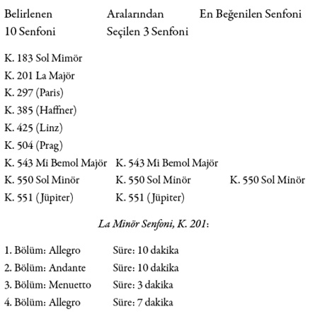
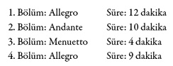
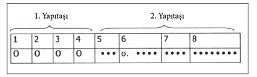
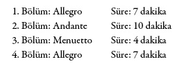

Senfonileri
Burada asıl mesele hangi eserlere yer vereceğimiz. Orkestra eserlerinin bir kısmı tamamlanamamıştır, bir kısmı atipik bir biçimde bir araya getirilmiştir, diğer bölümü opera uvertür geleneği içinde yer alır, bir diğer bölümü ise senfoni başlığını taşısa da aslında senfoni sınıfına dahil edilemez. Bu kadar çok çeşitli olmalarının nedeni, farklı vesileler için senfoni siparişi veren işverenlerdir. Elli senfoni hiç de azımsanacak bir rakam değil. Bu elli senfoniden günümüzde yaklaşık on tanesi sık sık icra edilir, bunlar arasında 1788 tarihli üç eseri de yer alır. “Mutlaka dinlenmesi gereken”ler başlığı altında toplanabilecek eserlerine aşağıdaki tabloda yer verdik. Bu eserleri seçerken göz önünde bulundurduğumuz kriterler:
● Çoğunluk tarafından tanınmaları
● Müzikal anlamda büyük ustalıkla bestelenmeleri
● Müzik marketlerde kolayca bulunabilmeleri
● Mozart müziğinin tipik örnekleri sayılmaları; iyi bölümlenmiş, kolaylıkla hatırda kalan melodiler olmaları

Bu senfoni, insanların Mozart’ı nasıl tanıdıklarını ve sevdiklerini bize gösterir: O neşeli, hareketli ve hoş biri olarak tanınıp sevilmiştir, senfoni de bu özellikleri taşır. Daha birinci bölümün başında büyük usta zihinlere kazınacak bir melodi oluşturmak için kullandığı yöntemi kullanır: Çok sayıda diyatonik sesi büyük bir atlama ile kombine eder. Burada yapıtaşlarının yerini değiştirir, ileriye doğru bir oktav atlamayla başlar, onu küçük nota değerleri ve ses tekrarları izler. Deneyimli olmayan dinleyici bile bu motifi iki yüz altı ölçülük ilk bölümden itibaren zahmetsizce takip edebilir. Eserin, “alla breve” gibi hızlı tempoda bir allegro olması bu durumu etkilemez. Yaylılar surdin ile çalındıklarında ses insanın kulağına o kadar yumuşak ve zarif gelir ki, bu yeni renk kullanımı Mozart’ın diğerine oranla daha yavaş olan ikinci bölümdeki (re majör, iki dörtlük – andante “con sordino”) çıkış noktasıdır.
Üçüncü bölüm (la majör, menuetto) onun hareketli noktalamalarıyla hayat bulur, on yedinci ve on sekizinci yüzyılın saray menuettolarıyla ilgisi yoktur. O feodal dönemde Mozart’ın cesurca büyüklenen menuettosu pudraları, perukları toza dumana boğardı.
Dördüncü bölümde, yani finalde kemancılar kan ter içinde kalır, çünkü Mozart “con spirito” diye not düşmüş ve on altılıklarla daha orta kısımda başlayan altı sekizlik ölçüde inanılmaz bir tempoyla çalınması gerektiğini belirtmiştir. Anlaşılan o ki Mozart için Do-Majör Senfonisi, K. 551 ayrı bir önem taşır. Bu senfoniyi besteledikten neredeyse on yıl sonra 4. Ocak 1783’te babasından bu eserini Viyana’ya göndermesini isterr. Büyük olasılıkla o dönemde akademi konserleri için farklı eserlere ihtiyaç duymuştu.
Do-Majör Senfonisi Jupiter, K. 551:

1788’de bestelenen Jüpiter-Senfonisi Mozart’ın son senfonisidir ve onun elinden çıkan en muhteşem müzik eseridir. O nedenle de Yunan tanrıları arasında ihtişamı ve zarafetiyle göz kamaştıran yüce Jüpiter’in ismiyle anılması son derece yerindedir. Esere bu ismi kimin verdiği tam olarak bilinmiyor. Kesin olan tek şey, bu ismi Mozart’ın vermediğidir.
Bu senfonide de Mozart basit, fakat dâhiyane melodisiyle insanı büyüler. İki temel melodik yapıtaşı kullanır. Her biri iki ölçü uzunluğundadır. Tam zamanlı ölçüdeki ilk yapıtaşında eksen olan do sesi üç kez çalınır, ardından bir ara gelir ve ikincisi tıpkı bir özür gibi hafif (piano) ve iç çekişi andıran seslerle üç kez çalınır. Sonrasında ise müzik iki temel melodiyle devam eder. Beşinci ölçüden itibaren melodi farklı şiddette sesler, başka ses rengi ve ses perdeleriyle, yaylı ve üflemeliler arasında gidip gelir. Eserin temelindeki o sarsılmaz düzen ve hafif piano-pasajlarda da hissedilir.
Farklı vurguları ve renk değişimlerini algılayabilmek için “santabile” diye not düşülen sakin fa majör andanteyi (ikinci bölüm) dikkatle dinlemek gerekir. Hiç şüphesiz, eseri bunlara dikkat etmeksizin dinlemek de insana çok şey kazandıracaktır. Üçüncü bölüm (menuetto), kromatik çizgilerin trajik ve ağır bir etki yaratmak zorunda olmadığına, aksine insanda dört üçlük ölçüde yavaşça salınır, hatta neredeyse dans eder gibi bir his uyandırabildiğine ilişkin nadir bir örnektir.
Ancak Mozart severler asıl dördüncü bölüme bayılırlar. Bu bölüm genellikle “şaheser”, “dâhiyane” gibi sıfatlarla anılır. Nedenine gelince: Usta burada, adeta çevresindeki insanlara “Bach çalışmalarında neler öğrendiğimi şimdi size göstereceğim” dercesine kontrpuanın yüksek sanatını kutlar. Kontrpuan bestelerinde önemli olan, orkestradaki sesleri hem bağımsız olarak, hem de birlikte diğer bağımsız seslerle kombine etmektir. Eğer bu başarılmışsa, ortaya çıkan şey bir sanat eseri kabul edilir, yüksek derece bir emeğin ürünü olarak değer görür. Bu şöyle bir durumdur: Büyükbabanın doğum günü partisinde herkes bir taraftan keyfince eğlenirken, diğer taraftan da gözleri yaşlı adamın üzerinde gibidir. Yani sonuçta her şeyi belirleyen aslında büyükbabadır. Dördüncü bölümde işlenen motif işte budur. Son bölüm bazılarının sandığı gibi gerçek bir füg değildir, ana motifin farklı çeşitlemelerini içeren bir fügatodur. Yine basit, düzenli, ritmik bir yapısı vardır. Dört ölçü birlik nota, dört ölçü de kısa zamanlı nota kullanılmıştır.

En Beğenilen – Sol Minör Senfoni, K. 550:

K. 201 ve Jüpiter Senfonisi’nin seçimine ilişkin başta bahsettiğimiz nedenler dışında en beğenilen senfoni için de objektif değerlendirme kriteri yoktur. Bu senfoniyi bestelediği 1788 yazında Mozart ekonomik açıdan sıkıntı içindeydi. Buradan hareketle kederli sol minör melodinin onun duygu durumunu ve hislerini ifade ettiği söylemek, pek doğru olmaz. Genel itibariyle minör modu tercih etmediği (elli senfonisinden kırk sekizi majör moddadır) doğru olsa da bu kesinlikle Mozart’ın majör mod bestelediği dönemlerinde tasasız ve mutlu olduğu anlamına gelmez. Her zamanki gibi eser ve bestecinin hayatı böyle bir ilişki içinde değildir, bu ilişki çoğu zaman muğlaktır. Bu nedenle bu konuya değinmeden geçiyoruz.
Mozart bu senfonisinin girişinde de, daha önceden tanıdığımız bir şablon kullanır; art arda gelen küçük notalardan büyük bir bütün oluşturur. Bu “alla breve” ve molto allegroda son derece sessiz ve hızlı bir biçimde gerçekleşir. On altıncı ölçüde ansızın şiddetli bir üflemeli akor araya girer, yavaşça çalmaya devam eder ve yirmi sekizinci ölçüden itibaren tutti kısımda ses inanılmaz yükselir. Sesin aşamalı bir biçimde yükselmesi –ve alçalması– var olan temel motifin yanında canlandırıcı bir unsur olarak varlığını gösterir. Aksaya aksaya başlangıçtaki üç temel sese iner ve ritmik olarak şöyle görünür:
ya da
Başka seslerde de dolaşılır: sol – fa diyez – mi – la – re – fa vb., genel olarak küçük bir alanda çok sayıda müzikal fikir barındıran bir profil çizer.
Daha yavaş olan ikinci bölümde Mozart, özellikle de yaylılarda, sonsuz bir sekizlik tekrarlar silsilesi sunar. Bu sekizliklere gitgide melodiler sarılmaya başlar. Hepsi mi bemol majördür. Güçlü bir biçimde kendini hissettiren sekizlik diziler insanın ruhuna sızar. Dinleyici onların, duraklarda bile nasıl devam ettiğini duyar.
... Sol majör trio menuettonun ardından son bölümde adeta fırtınalar kopar. Elbette hızlı tempoda (allegro assai), dinamik çeşitlemelerle –bazen kademesiz, bazen “subito” kademeli–, yaylı ve nefesliler arasında iyi kotarılmış oranlamalar, üç sesli yan motiften on üç sesli tuttiye kadar değişen yoğunluk. Doruk noktası olarak da, icrasında armonik dizilerden oluşan gerçek bir labirent bulunan sonat formu. En geç 165. ölçüde insan tutunacak bir dala ihtiyaç duyar. Ama Mozart uzak diyezli tonlardan geçerek sol minöre geri döner. Bu, tam anlamıyla bir mutluluktur.